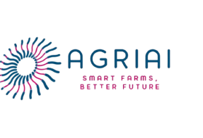
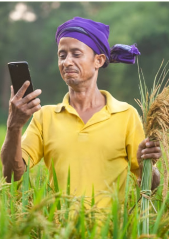
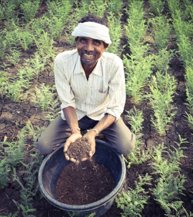
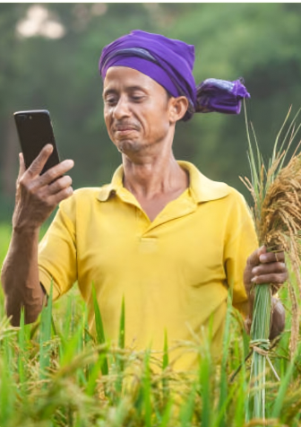
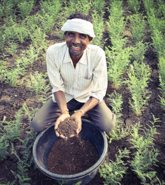
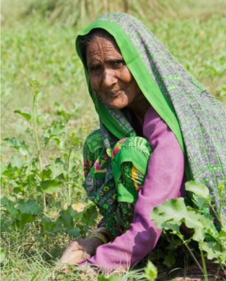
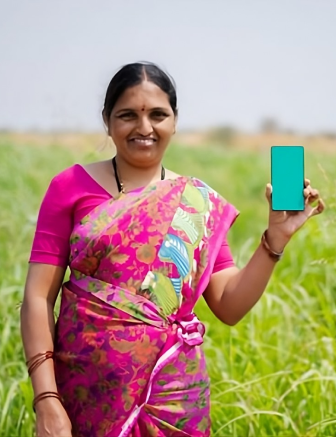
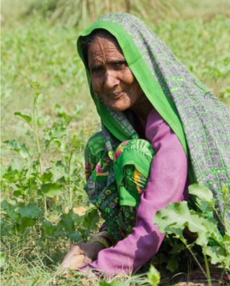
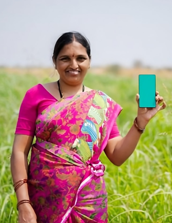

SIGN IN
ENG
0 Items
Rs.00
INFO@AGRIAI.COM
+91- 200-352-4121

ORGANIC FARMING
ORGANIC
FARMING
Why Organic?
Research
Resources
Advocacy
News
About


 



Munshi Rauniyar
Roopani Devi
Reena Kumari
Devdas Sharma
Switching to organic farming has tripled our profits within just a year!
Our organic produce attracts premium buyers, significantly boosting revenue.
Our organic journey has transformed every harvest into a financial success.
With healthier soil and happier customers, we’re reaping both profits and
sustainability.
Thanks to Agriai, we discovered the perfect strategies for transitioning to
organic farming. The platform provided us with expert guidance on crop
selection, sustainable practices, and market insights. By leveraging their
advanced tools and resources, we optimized our farming techniques and
connected directly with premium buyers.
Within just 12 months, our revenue skyrocketed as we tapped into the
high-demand organic market. Agriai's smart solutions simplified the
process, reduced costs, and ensured consistent quality, making profitability
easier than ever. Today, we proudly attribute our success to the innovative
support offered by Agriai.
Before Agriai, I struggled to sell my organic vegetables in my small
village. As a 50-year-old farmer, I never thought I could reach premium
buyers outside my community. But with Agriai’s help, I listed my produce
online and found customers willing to pay good prices for my fresh, natural
vegetables. The extra money has changed my life—I can now afford better
seeds, pay for my grandchildren’s education, and even save for the future.
Agriai has turned my small farm into a source of hope and pride for my
family.
As a housewife from a small village, I never imagined I could turn our
family’s small piece of land into such a profitable venture. But with
Agriai’s help, everything changed. Their tools guided me on improving soil
health and growing organic crops that people truly value.
Agriai also connected me with buyers who paid fair prices for our produce,
which made a big difference for my family. The platform was simple to use,
even for someone like me who had no prior experience with technology. Now,
every harvest brings us not only food but financial stability. Thanks to
Agriai, I feel proud to contribute to my family’s future while keeping our
farming sustainable.
Thanks to Agriai, we’ve revolutionized our farming practices and maximized
our earnings. By connecting with buyers directly through the platform, we’ve
eliminated middlemen and secured higher prices for our organic produce.
Agriai’s advanced tools helped us optimize crop planning and monitor soil
health, reducing waste and cutting costs.
Our profits have doubled within months as the platform matched us with
premium markets and customers who value quality. The insights and analytics
provided by Agriai have been game-changers, allowing us to make smarter
decisions that not only increased revenue but also ensured long-term
sustainability for our farm.
Found helpful
Found helpful
Found helpful
Found helpful


 



Connect with us :
Privacy Policy
FAQ’s
Terms & Condition
Copyright 2024 agroai.